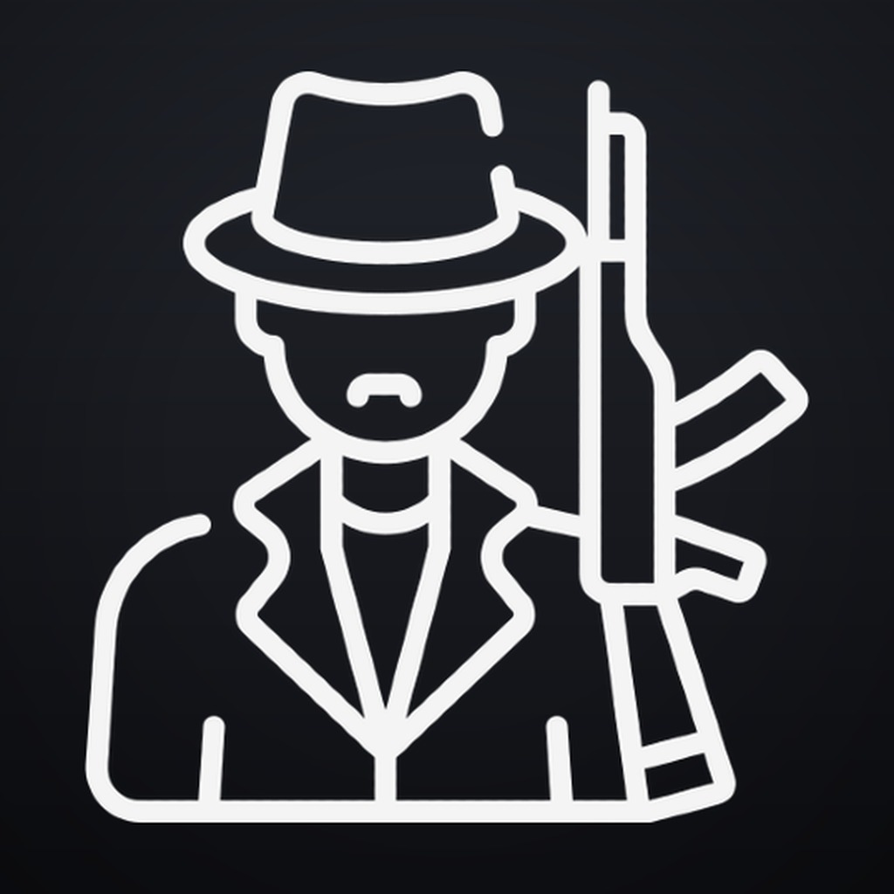
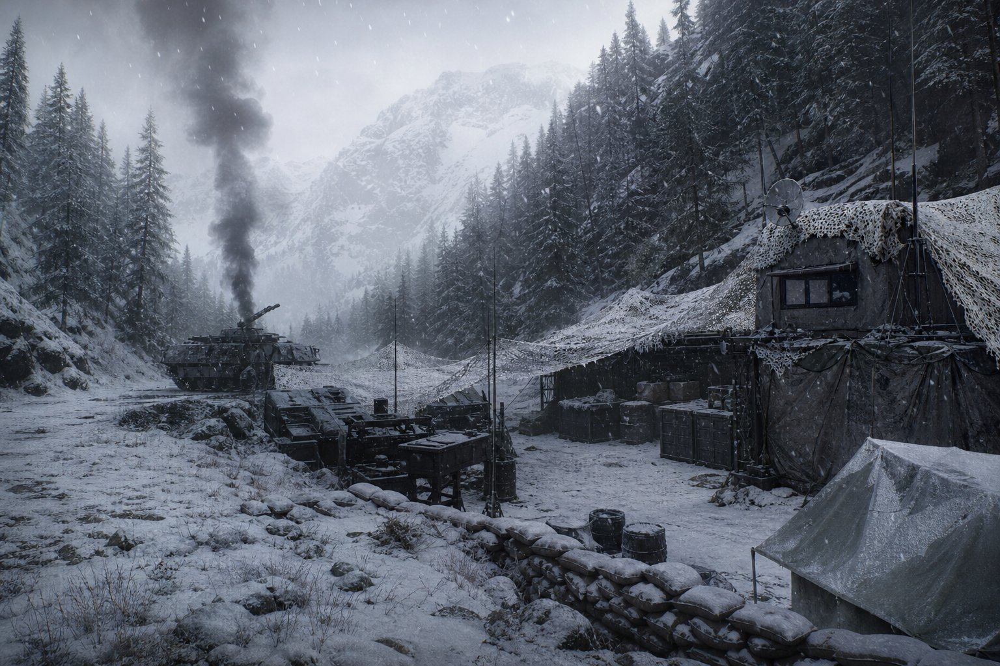
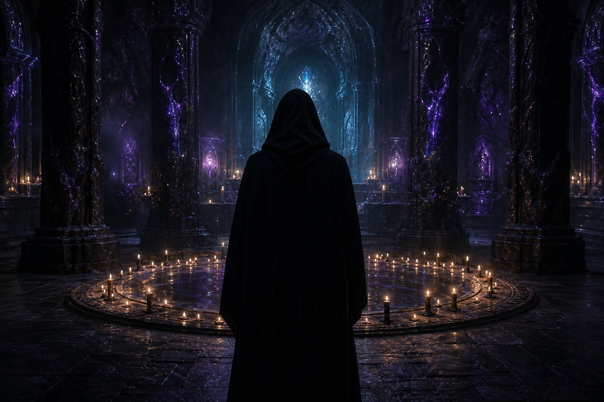

1. Vue d’ensemble
Le lore de Kamona repose sur une structure simple : deux puissances étrangères parient deux armées locales, un tiers groupe refuse de choisir, et une constellation d’organisations criminelles exploite le chaos. Les PMC que vous incarnez constituent la quatrième couche, celle qui arrive une fois que tout le monde est déjà installé. Communautaire
| Faction | Nature | Camp | Territoire | Chef / figure |
|---|---|---|---|---|
| Tevilla | Puissance étrangère | Nord | Sponsor du Nord | État non nommé |
| White Wolves Squad | Unité d’élite (forces spéciales) | Nord | TV Station, Guoyapos | Chef non identifié |
| Colom | Puissance étrangère | Sud | Sponsor du Sud | État non nommé |
| Alpha Team | Special Air Service de Colom | Sud | Opérations conjointes | Chef non identifié |
| Blackgold Universal | PMC internationale | Sud | TV Station, Marulos Farms, Mine | Direction militaire |
| Abyss Squad | Élite de Blackgold | Sud | Marulos Farms, Northridge | Hecate |
| MNST / Front du Nord | Armée régulière du Nord | Nord | Armory, TV Station | Renoir Brady (4e brigade) |
| CDIS / Armée du Sud | Armée régulière du Sud | Sud | TV Station, ports | Commandement non nommé |
| Kamona Liberation Army | Force dissidente locale | Tiers | Marulos Armory, Marulos Farms | Renoir Brady & Ajax Jones |
| Comité Sumek | Organisation internationale | Neutre | TV Station (après l’armistice) | Non désigné |
| Kamona Investigation Bureau | Service d’enquête | Neutre | Dossier / archives | Non désigné |
| EDELWEISS | Commandement militaire | Nord | TV Station, Guoyapos | EDELWEISS |
| Famille Antonio | Organisation criminelle | Neutre | Floranpino Valley, Norteno Court | Doss Antonio |
| Mad Dogs | Gang de prisonniers | Neutre | La Mine, le Valley | Stephen |
| Mutins du Polaris | Réseau de marché noir | Neutre | Zone portuaire | Derwin Pan & Rodriquez |
| PMC indépendants | Sociétés de mercenaires | Sans camp | Partout | Vous |
| Corporation Toland | Groupe pharmo-militaire | Inconnu | Laboratoire sous la TV Station | Aucune source officielle |
2. Les deux puissances étrangères
Tevilla
Puissance du Nord — rôle de parrain
Tevilla est une puissance militaire étrangère située au nord de Kamona. Elle n’est pas une faction « jouable » : elle n’apparaît jamais comme une entité en jeu. Son rôle est de fournir un appui militaire et logistique au Front du Nord, principalement via son unité d’élite, la White Wolves Squad. C’est ce qui permet au Nord de tenir dans la durée face au Sud. Communautaire
- Position : Nord de l’archipel, frontière montagneuse
- Instrument : la White Wolves Squad
- Objectif apparent : consolider le contrôle du Nord sur les sites stratégiques
- Après l’armistice : soutien maintenu en clandestinité Rapporte
La terminologie exacte de l’État n’est pas documentée : la communauté emploie indifféremment « Tevilla », « Tevila » ou « Fédération de Tevila ». Théorie
Colom
Puissance du Sud — rôle de parrain
Colom est une puissance étrangère située au sud de Kamona, qui soutient l’Armée du Sud (CDIS). Sa signature opérationnelle est l’Alpha Team, une unité de spécialistes aéronautiques (Colom Special Air Servicemen) déployée en opérations conjointes avec le Comité Sumek. Colom fait également appel à une PMC privée, Blackgold Universal, pour l’action de terrain. Communautaire
- Position : Sud de l’archipel
- Instruments : Alpha Team (militaire), Blackgold Universal (privé)
- Point noir : la réputation de Colom dans l’Operation Blackout — son Alpha Team n’a pas extrait Rapporte
Comme Tevilla, le nom officiel complet de l’État n’est pas documenté par une source primaire. Théorie
3. Les forces locales
MNST — Front du Nord
Armée régulière du Nord
Le MNST (sigle retenu par la communauté) est la force militaire régulière du Nord, secondée par Tevilla. Le jeu la mentionne explicitement dans les textes de mission : c’est MNST qui ordonne à EDELWEISS de sécuriser l’aéroport de Guoyapos comme base avancée après l’incident de la TV Station. Officiel
- Postes : TV Station, Marulos Armory, aéroport de Guoyapos
- Figures : Renoir Brady, EDELWEISS, les White Wolves
- Après-guerre : présence militaire réduite, mais influence intacte
CDIS — Armée du Sud
Armée régulière du Sud
Le CDIS est la force militaire régulière du Sud, soutenue par Colom. Le sigle apparaît dans les archives du Kamona Investigation Bureau, qui suggèrent que le CDIS aurait antérieurement contrôlé la Valley et Northridge avant que le MNST ne récupère ces territoires. Rapporte
- Postes : TV Station, ports, Marulos Farms
- Figures : Randall Fisher (contact CDIS devenu boss Blackgold)
- Relation avec Blackgold : le CDIS emploie des éléments de la PMC, pas l’inverse
Kamona Liberation Army
Renoir Brady & Ajax Jones
La troisième force. Née de la déclaration d’indépendance du Second Clan, elle est dirigée par Renoir Brady, ancien commandant de la 4e brigade d’infanterie blindée, avec Ajax Jones comme subordonné de terrain. Leur prise de l’Armory de Marulos crée un pôle neutre de fait que ni le Nord ni le Sud ne peut easily neutraliser. Communautaire
- Postes : Marulos Armory (bunker sud), Marulos Farms
- Ambiguïté : alliés du Nord, mais structure de commandement locale
- Faiblesse : Hecate franchit la ligne d’armistice et les chasse des Farms
EDELWEISS
Commandement militaire réactivé
EDELWEISS est un commandement militaire rappelé après l’incident de la TV Station, avec mission de reprendre le commandement de la station et d’en gérer les conséquences. Le texte officiel de la Saison 4 précise ensuite que MNST l’envoie sécuriser l’aéroport de Guoyapos. Officiel
- Trajectoire : TV Station → aéroport de Guoyapos
- Contexte : la tension dans la Dark Zone s’intensifie
- Point de rupture : l’escouade White Wolves est embusquée par la Blackgold Squad
4. Les entreprises militaires privées

Blackgold Universal
PMC internationale — bras armé de Colom
Blackgold Universal est une entreprise militaire privée internationale, principale exécuteur des intérêts méridionaux. Elle déploie des opérateurs sur la TV Station et les Marulos Farms, et son unité d’élite, l’Abyss Squad, est celle qui commet la trahison de l’Operation Blackout. Blackgold dispose aussi de tout un appareil de contacts : le contact book (Randall Fisher) fait office de recruteur de PMC, avec ses propres contrats de missions. Communautaire
- Rôle :PMC de soutien du Sud, mais avec agenda propre
- Signature : l’Abyss Squad et sa cheffe Hecate
- Méthode : embuscades nocturnes, intervention surgicale, rupture de la ligne d’armistice
- Enjeu interne : la trahison du Comité Sumek pour des raisons non élucidées

Abyss Squad — les « abysses » de Blackgold
Élite de Blackgold — commandée par Hecate
L’Abyss Squad est l’unité de company-level de Blackgold Universal, et Hecate en est la cheffe de terrain. Rapporte Ses opérations sont documentées : la percée de la ligne d’armistice à Marulos Farms qui force Ajax Jones à se replier, puis la trahison de l’Operation Blackout. Obol et Viper appartiennent à la même unité. Rapporte
- Responsable d’opérations : le terrain, pas la stratégie
- Signature : discrétion, timing, usage de la nuit
- Point faible : le radio-message mystérieux qui l’immobilise sur la ferme
Un nom de guerre ou un pseudonyme de quartier pour « Hecate » apparaît dans le lore, mais son nom civil n’est jamais révélé. Théorie
5. Les acteurs non belligérants
Comité Sumek
Organisation internationale — médiateur
Le Comité Sumek est l’organisation internationale neutre qui médiatise la fin des hostilités. Il finance et protège des vols d’aide humanitaire, lance l’Operation Peacemaker et ses deux équipes conjointes (Alpha et Bravo), puis réquisitionne la TV Station après l’Operation Blackout. Sa neutralité est officielle mais discontinue : lhotmail chargement d’échantillons d’Utopia plutôt que de l’aide montre que le Comité transporte autre chose. Communautaire
- Objectif déclaré : faire cesser la guerre
- Objectif réel (déduit) : controlling les échantillons d’Utopia
- Après l’armistice : contrôle de la TV Station
Kamona Investigation Bureau
Service d’enquête — narrateur du lore
Le Bureau d’enquête de Kamona est l’organisme qui publie le lore. Ses « Archives » sont diffusées par les canaux officiels (X, Facebook, Instagram) et compilent les résultats d’enquête sur les origines de la Dark Zone, les causes de la guerre Nord-Sud et les personnages influents. L’un des dossiers publiés porte le titre « Apostle ». Rapporte
- Archive n° 1 : origines et causes de la guerre
- Archive n° 2 : contrôle territorial du CDIS et du MNST
- Dossier « Apostle » : contexte historique et dynamiques clandestines
6. Les organisations criminelles
Famille Antonio
Doss Antonio
Organisation criminelle qui prospère dans l’anarchie de l’après-guerre. Doss Antonio (aussi appelé Doss Anthony) transforme sa richesse en pouvoir territorial : il embauche des sbires dont Porrero Kazan, passe des contrats auprès des White Wolves pour obtenir du soutien, et finance la construction du Norteno Court comme la rénovation de bâtiments d’une vallée. Il opère depuis la Villa, avec une escorte armée et la capacité de rappeler des renforts. Communautaire
- Base : Floranpino Valley, Norteno Court
- Code visuel : or, lunettes de soleil, costume d’affaires
- Token de boss : l’or travaillé artisanal
Mad Dogs
Stephen
Banditisme organisé dans les prisons de la Mine. Pendant la guerre, le gang de Stephen organise une émeute réussie contre le gardien et les gardes, avec l’aide de Porrero Kazan. La fracture interne suit : Porrero tente d’assassiner Stephen pour insubordination, est déposé, abandonné dans la mine, puis récupéré par les White Wolves. Le gang reste actif dans le Valley. Communautaire
- Base : la Mine et le Valley
- Recrutement : le système pénitentiaire
- Sort de Porrero : White Wolves → famille Antonio
Mutins du Polaris
Derwin Pan & Rodriquez
Le navire Polaris devait être coulé pour que la Marine du Nord ne soit pas démantelée. Son officier, Derwin Pan, refuse, tue ses supérieurs avec son F57 et provoque une mutinerie. Il construit ensuite avec Rodriquez un réseau de marché noir dans un port : le commerce illicite comme instrument de pouvoir. Rapporte
- Base : la zone portuaire
- Spécialité : contrôle des routes et des prix
- Token de boss : la ceinture tranchée
PMC indépendants
Vous
Les entreprises militarisées privées convergent vers la Dark Zone après les autres : elles n’ont ni alliance, ni patrie, ni maison. Elles viennent pour le contrat. C’est exactement ce que dit la documentation officielle du premier jeu : en Tac Ops le joueur entre en tant qu’Agent, en Covert Ops en tant que Rogue, et les « Dark Zone Pioneers » peuvent être déguisés en Rogues. Officiel
- Motivation : le contrat, le loot, la réputation
- Acteurs centraux : le contact book (recruteur) et les marchands
- Statut : neutres sur le papier, mais la cible de tous
7. Les factions que personne ne confirme
Elles reviennent dans les théories de la communauté et dans les documents non sourcés, mais aucune note de patch ni annonce officielle ne les mentionne. Théorie
La corporation Toland
Un groupe pharmo-militaire transnational qui aurait exploité le vide juridique de Kamona pour construire un laboratoire clandestin sous la TV Station, surnommé « l’Ark ». Source : discussions Reddit et sites générés automatiquement, sans confirmation. Théorie
Les « Cleaners » et la figure « Arachne »
Une unité d’élimination envoyée pour effacer les témoins et les traces après la perte de contrôle d’Utopia, avec un élément désigné sous le nom d’« Arachne, the Emerald Web » traquant les zones de contamination. Non documenté par l’éditeur. Théorie
Les projets Gungnir et Apostle
Un programme d’armes stratégiques (Gungnir) et un programme de type « Apostle » sont cités comme ayant incubé sous la TV Station. Le dossier « Apostle » figure dans les archives officielles du Bureau, mais le contenu exact du programme reste non documenté par une source tierce. Théorie
8. Les personnages
| Personnage | Faction | Statut | Terrain | Signature |
|---|---|---|---|---|
| Benjamin Renoir Brady | Kamona Liberation Army | Boss | Armory | RPK, MK14, AK-74N, Saiga-12 ; token « Insignia of Reversal » |
| Ajax Jones | Kamona Liberation Army | Boss | Farm | MP5, AKS-74U, AKM, Bizon ; escorte « Jackson » |
| Hecate | Abyss Squad (Blackgold) | Boss | Farm | MCX, MP5, MPX ; vision thermique ; token « Clean Climbing Hook » |
| Obol | Abyss Squad | Boss d’event | Events S7 | M14, BPZ ; armure de niveau 3 |
| Viper | Abyss Squad | Boss d’event | Events S7–S8 | M24 + M80, SVDS + LPS ; jet de 120 cartouches |
| Fred Lee | Indépendant / boss de zone | Boss | Northridge | SVDS, M14, FAL, AR-30 ; escorte « Juve » ; token « Fred’s Wedding Ring » |
| Antonio Doss | Famille Antonio | Boss | Valley | AKS-74U, MP5, F2000, Glock 18c ; or et costume |
| Porrero Kazan | Mad Dogs puis Antonio | Boss | Mine / events | RPK, casque explosif ; token « clé de la prison de la Mine » |
| Derwin Pan | Mutins du Polaris | Boss | Zone portuaire | RPK-16 à tambour 95 rounds, AEK, F57 ; token « ceinture tranchée » |
| Randall Fisher | CDIS / Blackgold | Boss d’event | Events S4 | Ancien forces spéciales de l’Union Océanique ; contact book de PMC |
| Kurt Williams, Rolf Schneider, Bernard Martin | TV Station | Bosss | TV Station | Trio de la station ; retirés du récit après la S10 chinoise |
| Doctor Mihalio | Aucune — objet de convoitise | Scientifique | Non fixé | Évadé par Blackgold, ambuscade des White Wolves, déplacé aux Farms |
| Evita | Contact / medic | PNJ | Non fixé | Se dit fille de Mihalio, puis corrige ; coupe les liens avec les contractors |
| Stephen, Rodriquez | Mad Dogs / marché noir | Secondaires | Mine / Port | Chef de gang et contact de contrebande |
Les armes, les armures et les tokens de boss listés ci-dessus proviennent des fiches communautaires et namuwiki ; leur présence en jeu est vérifiable, leur lecture purement narrative reste déductive. Rapporte
9. Qui soutient qui
| Faction | Tevilla | Colom | Comité Sumek | MNST | CDIS | KLA | Blackgold |
|---|---|---|---|---|---|---|---|
| Tevilla | Soi | Hostile | Neutre | Soutient | Hostile | Soutient | Hostile |
| Colom | Hostile | Soi | Neutre | Hostile | Soutient | Hostile | Emploie |
| White Wolves | Émanation | Hostile | Ambigu | Avec | Hostile | Avec | Hostile |
| Alpha Team | Hostile | Émanation | Conjoint | Hostile | Avec | Hostile | Trahit |
| Abyss Squad | Hostile | Sous Blackgold | Trahi | Hostile | Avec | Hostile | Appartient |
| Kamona Liberation Army | Sponsor | Hostile | Accusé | Allié | Hostile | Soi | Hostile |
| Famille Antonio | Client | Hostile | Indifférent | Client | Hostile | Allié | Hostile |
| PMC indépendants | Aucun | Aucun | Contrats | Aucun | Aucun | Aucun | Concurrent |
Lecture : vert = lien établi et documenté, orange = lien ambigu ou daté, gris = aucun lien. Communautaire
10. Ce que les boss révèlent de leur faction
Chaque boss est l’avatar visible d’une faction. Son équipement, ses escortes et son token en disent plus long sur le camp que sur lui-même. Rapporte
- Les escortes ont un nom de famille commun. Les hommes d’Ajax Jones s’appellent tous « Jackson », ceux de Fred Lee tous « Juve ». C’est la signature d’une organisation, pas d’une bande : le clan est structuré.
- Les niveaux de protection trahissent le budget. Un boss d’elite de PMC porte du T3–T4 et des opticiennes thermiques ; un chef de guerre civile porte du L4 et des classes 4.
- Les tokens racontent une relation. La « clé de la prison de la Mine » de Porrero raconte son passé ; l’« Insignia of Reversal » de Renoir raconte son statut de dissident ; le « Clean Climbing Hook » de Hecate raconte une opération d’infiltration.
- Les signatures d’arme. Hecate, Obol et Viper partagent le même ADN d’équipement : ce sont des fratries d’arme, pas des Individus.
11. Implications pratiques
| Faction dominante | Zone | Boss associé | Ce que ça change pour vous |
|---|---|---|---|
| Kamona Liberation Army | Armory, Farm | Renoir, Ajax | Densité de PNJ élevée : imaginez des grenades, ne tirez pas en rafale dans les couloirs |
| Abyss Squad (Blackgold) | Farm, Northridge | Hecate, Obol, Viper | Adversaires disciplinés : surveillez les angles hauts, la lunette thermique change les règles |
| Famille Antonio | Valley | Doss Antonio | Zone de valeur plutôt que de bullets : coffres, clés, marchands, corps gardés |
| Mad Dogs | Mine / events | Porrero Kazan | Hostilité de proximité : casque explosif, charges, attention aux recoins Aveugles |
| Mutins du Polaris | Zone portuaire | Derwin Pan | Alerte sonore : il diffuse sur les haut-parleurs, couper l’alarme est prioritaire |
| TV Station | TV Station | Kurt, Rolf, Bernard | Trio redoutable : soit vous les séparez, soit vous les affrontez ensemble |
La règle de lecture d’un boss
Avant d Engaging un boss, demandez-vous à quelle faction il appartient et qui le paie. Un boss de PMC est un problème tactique (équipement, escortes, discipline). Un boss de guerre civile est un problème politique (nombreux, imprévisibles, hostiles à tout le monde). Vos tactiques ne sont pas les mêmes.
12. Sources
Officiel
- Notes de mise à jour ABI (Steam / site officiel) — missions de saison : « Dusk to Dawn » (EDELWEISS, MNST, aéroport de Guoyapos, embuscade White Wolves / Blackgold), « A Debt Unpaid » (faction inconnue, traces de Lab 76, force spéciale échappée de la TV Station, opération en cours de la Dark Zone), « Abundant Profit », « Send Signal ». steamcommunity.com (nouvel onglet)
- Annonce de la Saison 7 : Utopia — MoreFun Studios, origine et responsable du réactif non expliqués. idcgames.com (nouvel onglet)
- Description officielle Arena Breakout (2022) — Tac Ops / Covert Ops, Agents et Rogues, Dark Zone Pioneers. arenabreakout.com (nouvel onglet)
- Kamona Investigation Bureau Archives ① et ② — publications officielles : origines de la Dark Zone, causes de la guerre, dossier « Apostle », attributions territoriales CDIS / MNST.
- Story of Kamona — série officielle : First Season Documentary, EP.03 Red Smoke, EP.04 The Key, EP.05 RAT, EP.06 Dogtag, No Man’s Land, A Golden Opportunity.
Communautaire
- Arena Breakout Wiki (Fandom) — arena-breakout.fandom.com (nouvel onglet)
- Grokipedia — Kamona — alliances, commanders, structure des PMC et de l’Operation Blackout. grokipedia.com (nouvel onglet)
- NamuWiki — Arena Breakout / Boss — fiches de boss : armes, armures, escortes, tokens, affiliation. en.namu.wiki (nouvel onglet)
- Reddit r/ArenaBreakoutGlobal — fil « Any good YouTube channels covering the Lore of Kamona ? » et son récapitulatif de factions (CDIS = Armée du Sud, MNST = Front du Nord, Blackgold = PMC de Colom implantée dans la Mine) : synthèse de joueur, non officielle.
- senseos.gg — registre des boss et de leurs apparitions. senseos.gg (nouvel onglet)
Théories (non confirmées)
- Corporation Toland, « l’Ark », projet Gungnir, projet Apostle, « Cleaners », figure « Arachne » : non confirmées par l’éditeur.
- La ventilation exacte des rôles entre MNST et CDIS sur la Valley et Northridge : issue d’un post Reddit sur les Archives n° 2, à recouper avec la source primaire.
- Le rattachement exact d’EDELWEISS (unité, corps ou personne) n’est pas explicité par les textes : traité ici comme un commandement militaire réactivé. Théorie